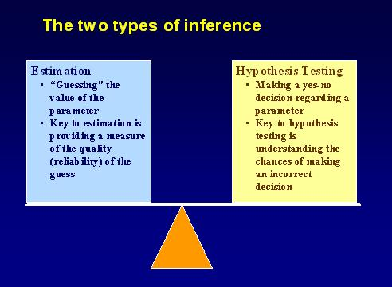
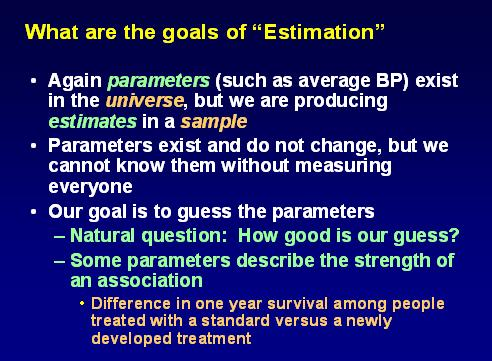
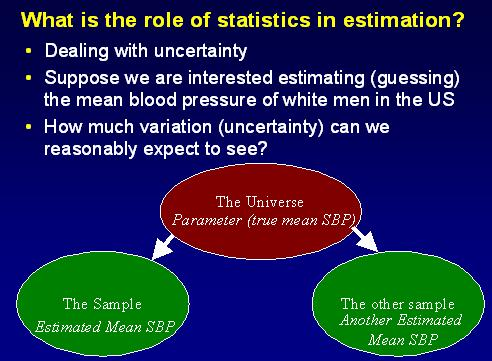
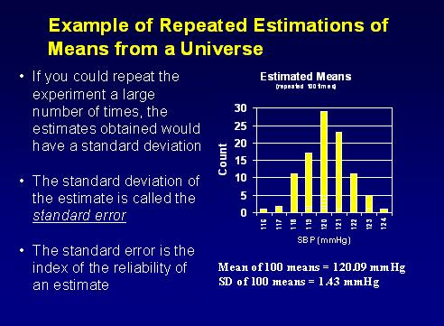
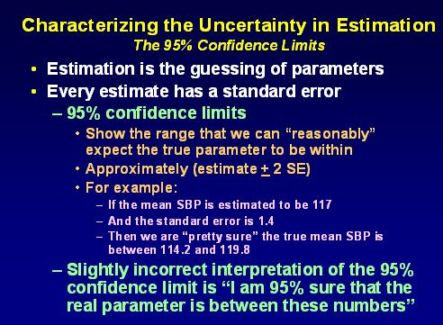
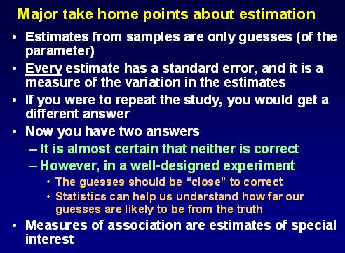
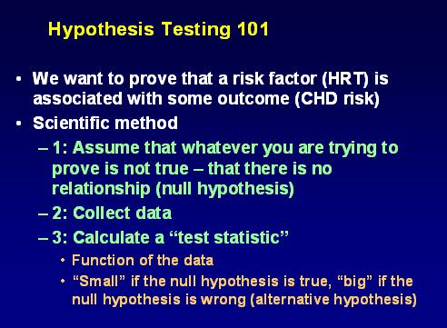
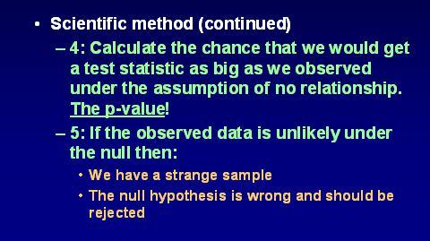
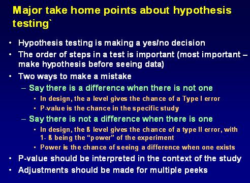

Estimation versus Hypothesis Testing
Lead Author(s): George Howard, DrPH
Inference

ESTIMATION

Statistics in Estimation

Repeated Estimates

Uncertainty in Estimation

Summary: Estimation

HYPOTHESIS TESTING


Summary: Hypothesis Testing
